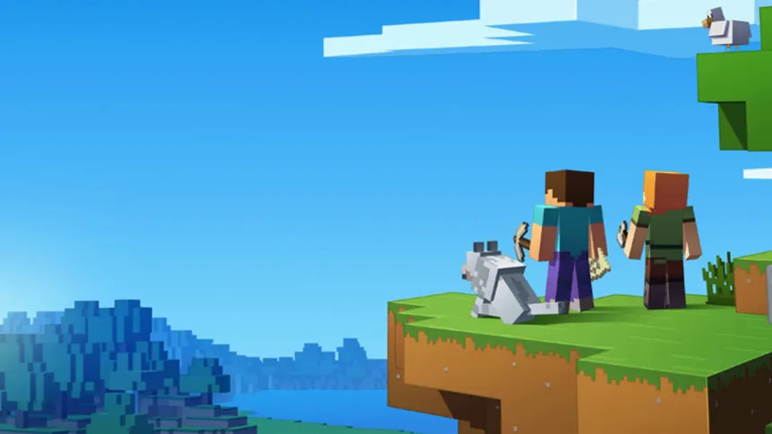
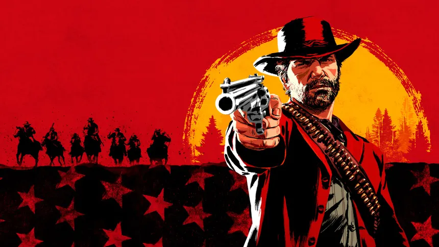
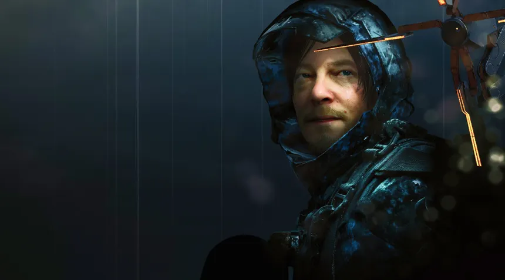
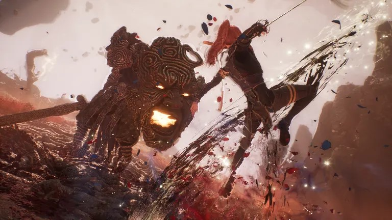
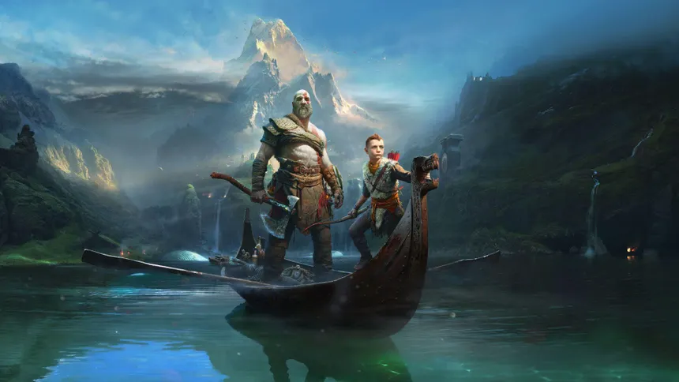

Sobre mim
Quem eu sou?
Meu nome é Henrique Morais Monteiro, tenho 18 anos e atualmente estou cursando a disciplina de Análise e Desenvolvimento de Sistemas na Uninter no formato EAD.
Hobbies
Jogos
Meu primeiro contato com games foi usando um tablet que pertencia ao meu tio, por volta dos meus 6/7 anos de idade, eu costumava jogar Angry Birds e gostava muito, aos 8 anos ganhei um tablet, e a partir desse momento fui conhecer novos jogos como Minecraft, Roblox, Clash Royale, entre outros. Com 10 anos consegui um Xbox 360, e se tornou meu favorito por um bom tempo.
Aos 11 anos ganhei um notebook, e foi nele que se intensificou minha relação com games, passava horas do meu dia com amigos no Skype jogando e se divertindo. Consegui meu primeiro pc gamer de mesa com mais ou menos uns 13 anos de idade e tenho ele desde então (já ta velho o bixinho hahaha)
Agora com meus 18 anos, comprei um ps5 em janeiro de 2025, e realizei um dos meus sonhos que foi ter um console de ultima geração, especialmente o Playstation 5, sendo o meu primeiro contato com a marca.
Aqui está uma pequena lista de meus jogos favoritos:
Minecraft
Red Dead Redemption 2
Death Stranding
Clair Obscur: Expedition 33
God of War
Filmes/Séries/Animes
Sobre filmes, ultimamente não ando assistindo muitos por falta de tempo, isso vale o mesmo para séries e animes, mas meu estilo favorito para longa-metragem são os
que contém bastante ação, os famosos filmes em que o personagem solta ou possuem "poderzinho" haha.
Como por exemplo os filmes da Marvel, eu gosto muito dos Vingadores, Homem Aranha, Homem de Ferro, Capitão América, a maioria dos filmes até o Vingadores Ultimato, depois desse
em especifico caiu muita a qualidade, em minha opinião.
Também adoro as animações como Shrek, Como Treinar Seu Dragão, Gato de Botas, Sonic, etc.
Séries
Eu assisti muitas poucas séries, mas das que eu assisti considero algumas muito boas. A ultima série que assisti foi a do Invencível, e eu achei muito maneira. Outra série que assisti não faz muito tempo
foi Cavaleiro da Lua da Marvel, eu não conhecia o personagem, curti muito os episódios e o desenrolar da trama.
Animes
Agora Falando Sobre Animes, esse sim eu possuo uma paixão, que entra no mesmo estilo dos filmes, animes que possuem poderzinho, os famosos Shōnen, desde a minha infância assisto Dragon Ball, Naruto, Boku no hero, Pokemon, e mais alguns.
Mas de longe, quando se fala de um anime favorito, para mim é One Piece, conheci com meus 12 anos e venho acompanhando até hoje, é para mim a melhor obra da história dos animes, com mais de 1000 episódios assistidos, e que por incrível que pareça, é pouco haha, ainda há muito a ser contado na história. Mas o mais interessante de One piece, é a construção do mundo, as batalhas, a história, os problemas sociais abordados, os momentos de alegria, os momentos que você chora, é algo muito único de se acompanhar, e o melhor de tudo, é pra qualquer idade, é um anime que muitas crianças gostam, e muitos adultos também, é algo mágico.
Curiosidades
Eu tenho 2 cachorros, uma se chama Ayla e a outra Safira, são fêmeas, a primeira é uma yorkshire e a segunda é uma presa canário, elas tem que ficar separadas pois a Safira quer devorar a pequena, a Safira que é a presa canário é um cachorro feito para guarda, ou seja, ela quer devorar todo mundo, com a nossa família ela é super dócil o único problema é com a york, no começo quando ela ainda era uma bebê elas se davam bem mas após alguns meses ela começou a apresentar comportamentos agressivos com ela e tivemos que separar. Também possuo 2 Calopsitas, chamados Jack e Zeca.
Trabalho em uma loja de material de construção que pertence aos meus pais, então durante o dia estou ocupado atendendo clientes, guardando mercadoria, olhando o Whatsapp.
Minha mãe tem 3 irmaõs e 4 irmãs, então minha família é bem grande, já meu pai possui apenas 1 irmã
Não bebo nenhum tipo de bebida alcoolica nem fumo.